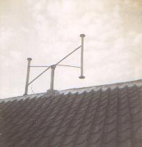
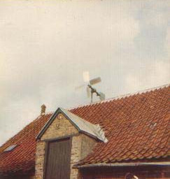
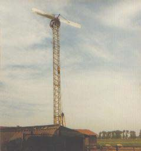
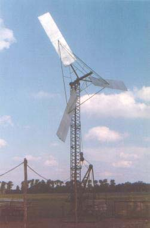
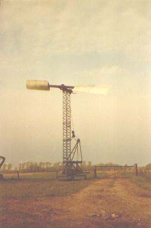

Activities · Wind turbines
Wind turbines
Wind turbines constructed between 1977 and 1982.
01 — Gallery
Rotor images





Activities · Wind turbines
Wind turbines constructed between 1977 and 1982.
01 — Gallery




